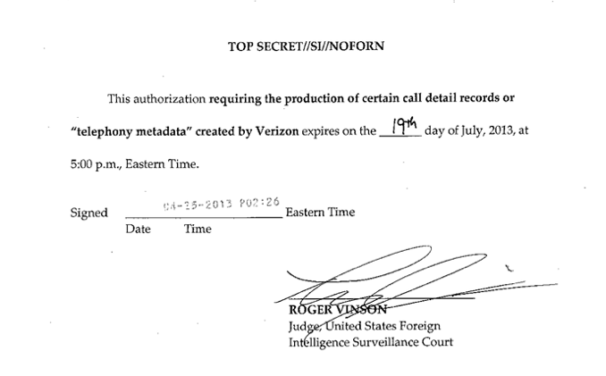
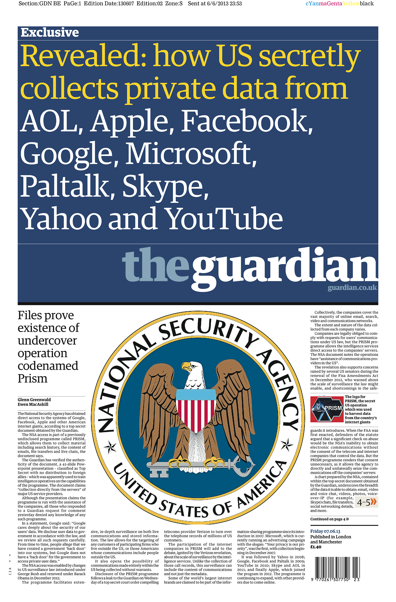
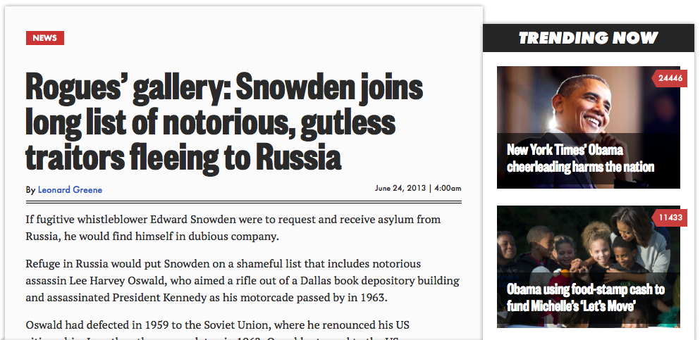
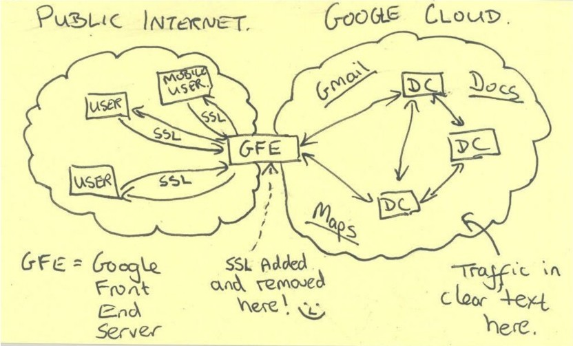
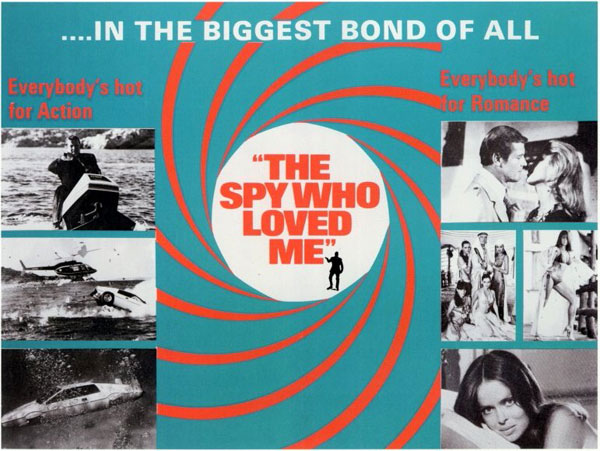
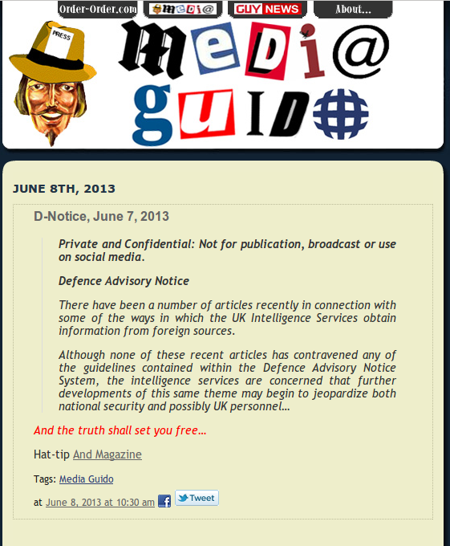
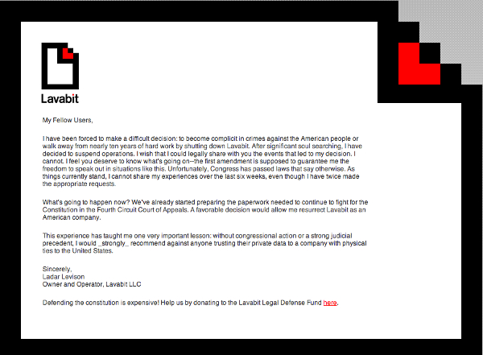
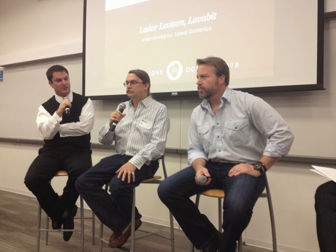

The Summer Of Snowden
And why you should care
James Moulang, Anvil Palamattam, Matt Flint, Wesley Noble Hewitt, Jack Wearden & John Morley
5 June 2013
6 June 2013
8 June 2013

9 June 2013

24 June 2013
Collecting Data from Tech Companies
Google & Yahoo Tapping
Tapping into the two of the largest tech companies
Microsoft
Giving the keys to Uncle Sam..
Skype
2 billion minutes are spent talking to each other every day on Skype. Are those monitored?
Apple & Facebook
What about the company that has the biggest loyal fanbase and the social network that has over 1.5 billion active users?
GCHQ TAPPING INTO INTERNATIONAL FIBRE OPTIC CABLES
WHAT IS IT?
Mass monitoring and collection of phone calls and internet traffic
Performed under the 'Tempora' program
(British equivalent of the US's PRISM program)
how does it work?
- Actively monitoring and collecting data for the last 18 months.
- Interception probes attached to fibreoptic cables.
- The program is constantly expanding.
Data collected
Records include:
- Phone calls
- Email messages
- Facebook entries
- Internet history
- To name a few...
Legality
- Deemed legal!
- An old clause from RIPA (Regulation of Investigatory Powers Act, 2000) allows tapping of targets if they have a warrant
"Mass, indiscriminate surveillance of this kind goes against an individual's fundamental human right to privacy."
LOVEINT - spying on love interests
What is it?
Comes from a play on acronyms like SIGINT (for the sort of signals intelligence that's handled by the NSA) and HUMINT (for the human intelligence that's carried out by agencies like the CIA).

LOVEINT is the cases of workers using the NSA's intelligence data to spy on individuals they know.
cases
A military member queried six email addresses of a former girlfriend.
One worker regularly tapped the agency's phone-data collection program to screen people she met at cocktail parties.
Of the 12 cases confirmed only 5 were disciplined.
Consequences
Several of the violations were only identified after spies with guilty consciences came clean.
Suggests a lack of safeguards around the massive amount of data that they have collected.
So why is it bad?
- Use of backdoors poses a major security risk
- Can be used to find reasonable doubt against "Problem Individuals"
- Provides the power to easily perform industral espionage
- Caused tensions between the US and other countries
Reactions in the Political Arena
2 New Bills
- FISA Amendments act
- USA Freedom Act
D-Notice
7 June 2013
Guido Fawkes Blog
William Hague, 9 June 2013:
"If you are a law-abiding citizen of this country going about your business and your personal life you have nothing to fear"
Whitehall & Downing Street order HDD Destruction
"On Saturday 20 July, in a deserted basement of the Guardian's King's Cross offices, a senior editor and a Guardian computer expert used angle grinders and other tools to pulverise the hard drives and memory chips on which the encrypted files had been stored"
Detention of David Miranda
Sunday 18 August, 2013
Picture: Ricardo Moraes/Reuters
"Grilling" of Spymasters
Thursday, 7 November 2013
Picture: ReutersTV
In the meantime...
Image: american.edu
"The math is good, but math has no agency. Code has agency, and the code has been subverted."
Bruce Schneier's Blog
Backdoors In implementation
 istruecryptauditedyet.com
istruecryptauditedyet.com
And then there's direct infiltration of services...
Lavabit
Image: rt.com
"If you knew what I know about email, you might not use it."
Ladar Levison, Lavabit founder.
Dark Mail Alliance
Ladar Levison, Jon Callas and Mike Janke.
Image: thehackernews.com
- Open sourcing Lavabit code - on Kickstarter.
- Create "Email 3.0" to replace SMTP.
- darkmail.info
One to look out for
Image: technoarena.in
"OpenPGP signatures and encryption are part of Mailpile's core design, not an afterthought or plugin."
On cloud mine!
Self hosted cloud
- Files
- Contacts
- Calendar
- Bookmarks
- And more...
Stay informed, become informer!
- Take responsibility, spread your knowledge.
- Bruce Schneier's blog.
- Coverage by The Guardian
- Created using reveal.js.
- github.com/NotBobTheBuilder/prism-pres
And if all else fails...
Any questions?